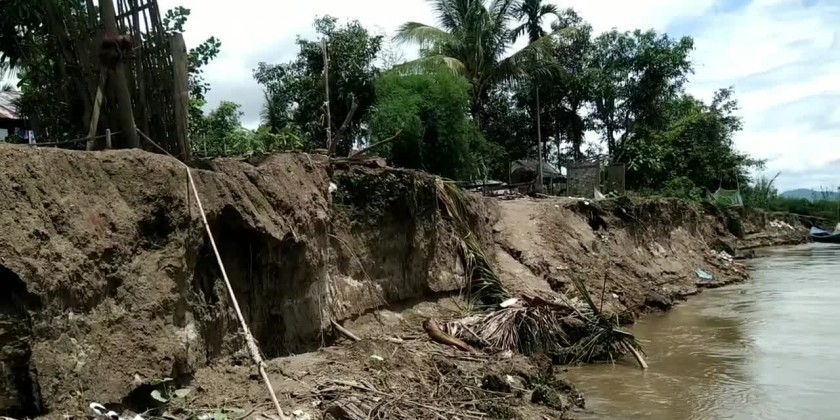

From the northern hills to the southern coast, the hazards people face change with the landscape. Explore all seven states, seven regions, and Nay Pyi Taw.
Select a state, region, or the Nay Pyi Taw marker. Risk can vary between places within the same area.
You can use the photo list while the map loads.
The map file could not load. You can still use the photo list below.
Selected area Nay Pyi Taw marker

Ground that sinks unevenly can crack surfaces and damage buildings.Floodwater can cover low streets and cut off access to nearby homes.Sliding soil and rock can reach roads and homes below a slope.Strong shaking can damage walls and bring down heavy parts of buildings.Low beaches and river mouths can give tsunami waves a path inland.
Region
Ayeyarwady
River flooding and coastal storm surge
What happened here?
When Cyclone Nargis reached the Ayeyarwady Delta in May 2008, a storm surge pushed seawater across low-lying land and added to the damage from wind and rain.
Where risk is higher
Low coast and river mouths. Seawater pushed inland by a cyclone can reach delta villages and farmland.
Low land near rivers and channels. Prolonged rain or high river levels can flood homes, fields, and low roads.
One way to reduce risk
Learn which routes lead out of low coastal areas and where to go when an evacuation is announced.
In September 2024 the Sittaung River breached flood barriers in Taungoo Township. An early UN update reported that more than 30 villages were submerged.
Where risk is higher
Taungoo and the Sittaung floodplain. Low villages and roads beside the river are exposed when it rises or flood barriers fail.
Places near the Sagaing Fault. Bago City and nearby areas can experience strong shaking. Poorly reinforced buildings are more vulnerable to damage.
One way to reduce risk
Identify a route that stays on higher ground and store important documents above likely flood levels.
Heavy rain triggered a landslide in Falam District in July 2015. The debris blocked a river. If a blockage like this breaks, water can rush downstream.
Where risk is higher
Falam District and steep road cuts. Heavy rain can weaken the ground. Buildings and roads on or below a slope may be in the path of a slide.
Valleys below blocked rivers. Landslide debris can trap water. A break in the blockage can send floodwater down the valley.
One way to reduce risk
Have steep slopes assessed before building or changing drainage, especially where homes or roads sit below them.
Early reports from September 2024 described homes and farmland damaged by flooding in Magway. Flooding can affect both household belongings and income from crops.
Where risk is higher
Low-lying farms and settlements. Heavy rain and rising waterways can inundate crops, homes, and stored supplies.
Low roads and river crossings. Floodwater can isolate villages even where individual homes are on higher ground.
One way to reduce risk
Keep vital records in waterproof storage above likely flood levels.
A magnitude 7.7 earthquake struck central Myanmar on 28 March 2025. Reports documented damage in Mandalay, including at Mandalay Palace and Mahamuni Pagoda.
Where risk is higher
Mandalay City and places near the Sagaing Fault. Buildings with weak walls or poor connections can suffer more damage during strong shaking.
Kyaukse and Yamethin townships. These were among the areas affected by flooding in September 2024. Low roads and settlements near waterways are more exposed when water rises.
One way to reduce risk
Secure heavy furniture and ask a qualified engineer about strengthening vulnerable buildings.
The March 2025 earthquake caused severe damage in Sagaing. The old Inwa Bridge linking Sagaing and Mandalay collapsed.
Where risk is higher
Sagaing City and places near the fault. Strong shaking can damage homes and bridges. Buildings with weak connections or poorly reinforced walls are more vulnerable.
Low land beside waterways. Flooding can cut off river crossings and damage farmland. Sagaing was among the regions with the largest losses in the 2015 floods and landslides assessment.
One way to reduce risk
Identify other routes across your area in case an important road or bridge is damaged.
Heavy rain in September 2024 caused extensive flooding in southern Shan. Nyaungshwe Township was among the areas hit hardest.
Where risk is higher
Nyaungshwe and low ground around Inle Lake. Water can spread into low lakeside settlements and farmland after heavy rain.
Steep roads and settlements in southern Shan. After prolonged rain, slopes can fail and block routes. Flooding and landslides affected multiple townships in 2024.
One way to reduce risk
Plan a route away from low lakeside and riverside areas that also avoids unstable slopes.
After the 2004 Indian Ocean tsunami, researchers documented tsunami heights at sites along the Tanintharyi coast and in the Ayeyarwady Delta.
Where risk is higher
Low coastal villages, beaches, and river mouths. Tsunami waves can reach low land and travel through channels leading inland.
Settlements on low islands. Strong currents can affect harbours and shorelines. A route to suitable high ground can help people get out of the most exposed areas.
One way to reduce risk
Learn which marked routes lead inland or to higher ground and practise reaching the meeting point.